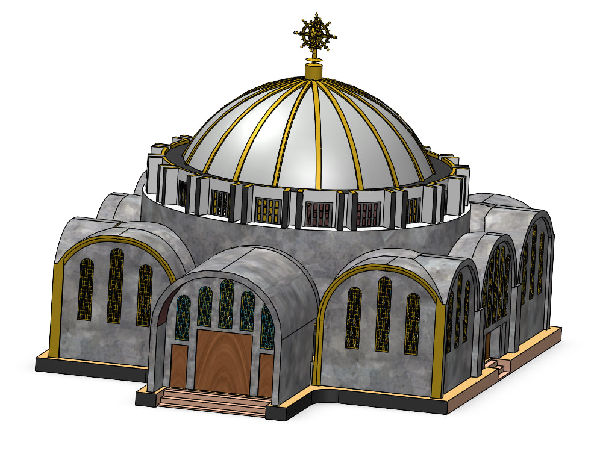
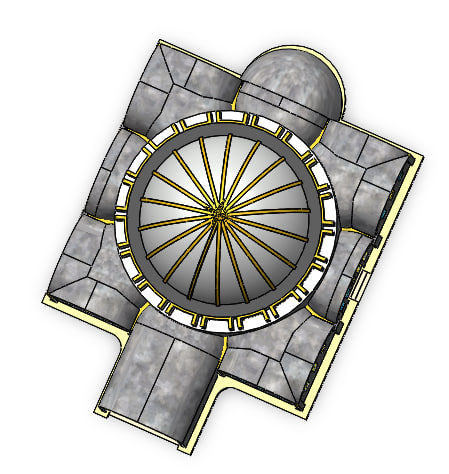

Church-Inspired 3D-Printed Table Lamp
SolidWorks Design | 3D Printing | Electrical Integration

Project Overview
This project involved designing and manufacturing a decorative tabletop lamp inspired by Ethiopian church architecture. The design incorporates architectural features such as a dome, windows, and detailed exterior elements.
The project combines 3D CAD modeling, additive manufacturing, and electrical integration to transform a digital design into a functional decorative lighting product.
My Contributions
- Developed the 3D model using SolidWorks.
- Created architectural details for the lamp structure.
- Prepared the model for 3D printing.
- Manufactured the structure using a 3D printer.
- Installed and integrated the internal lighting components.
- Assembled the final tabletop lamp.
3D Design and Modeling
The lamp structure was modeled in SolidWorks, focusing on its architectural shape and decorative details. The model was developed with manufacturing through 3D printing in mind.

3D Printing and Manufacturing
The digital model was converted into a physical structure using additive manufacturing. This process transformed the CAD design into the lamp's architectural body.
Electrical Integration
Lighting components were installed inside the 3D-printed structure to make the product a functional tabletop lamp, combining mechanical fabrication with electrical assembly.
Project Outcome
A decorative, church-inspired tabletop lamp designed in SolidWorks, manufactured through 3D printing, and completed with integrated lighting components.
Tools and Technologies
SolidWorks · 3D Printing · Product Design · Electrical Installation · Prototyping